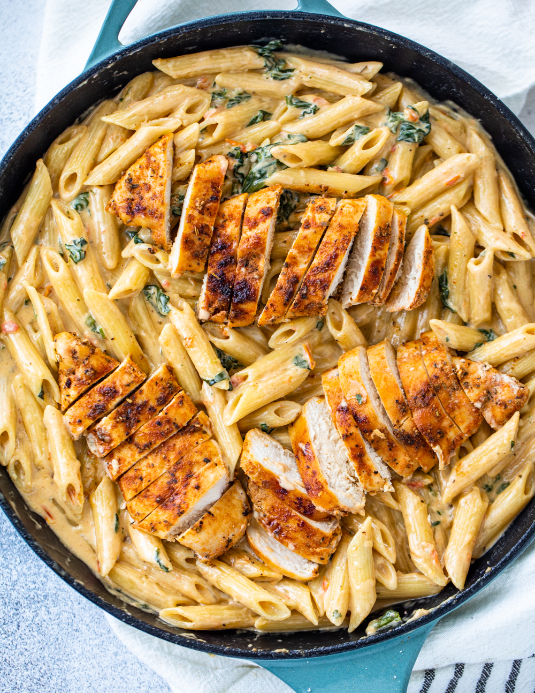

Creamy Garlic Chicken Pasta

Ultimate Comfort Meal
If you have been in the mood for a chicken dinner that is creamy and delicious that your whole family will love, this is perfect for you. Everything from the juicy chicken breast all the way to the healthy spinach gives this dish so much flavor.
It doesn’t matter if you’re looking for something that’s easy for a busy weeknight or if you’re coming over for dinner. Everyone is going to rave about the amazing way this pasta tastes.let’s get started so you can head in the kitchen and whip up a batch.
Ingredients
- 10 Ounces Pasta (any kind)
- 1 Pound Chicken breast, boneless (thighs works too)
- Seasonings, garlic powder, italian seasonings, paprika, salt, and pepper (teaspoon each)
- 2 Tablespoon Olive oil
- Tablespoon Butter
- 4 Cloves Garlic, minced
- 1 Cup Tomatoes
- 2 Cups Spinach
- 2 Cups Heavy cream
- 1/2 Cups Parmesan cheese
Steps
- Prep Pasta: Boil water in a large pot and cook pasta al dente according to package instructions.
- Season both sides of chicken breasts with salt garlic powder, Italian seasoning, paprika, and a generous pinch of salt and pepper.
- Heat olive oil in a large heavy duty pan over medium-high heat and cook chicken breasts 5 minutes per side or until cooked through. Remove from heat and set aside.
- To the same pan, add the butter and garlic and cook for 1 minute or until fragrant. Add the tomato and spinach and cook 2-3 minutes or until the tomato and spinach are soft and wilted.
- Reduce the heat and add the heavy cream and parmesan cheese. Whisk until fully incorporated and creamy. Add a pinch of salt and pepper to taste.
- Drain pasta and slice chicken into thin slices or cubes and return to the same pan. Stir to combine and serve!